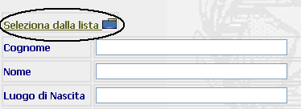
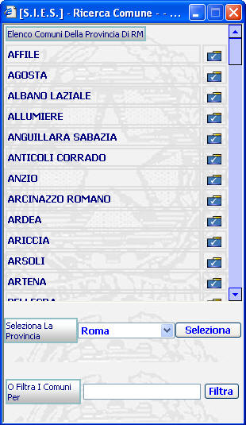
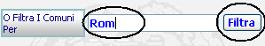
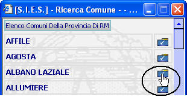

<html>

<head>
<base target="_self">
<meta http-equiv="Content-Type" content="text/html; charset=windows-1252">
<title>T_P_Lista_Predefinita</title><style>a{font-weight:bold}</style>
<style>
<!--
p.MsoBodyText
	{margin-top:0in;
	margin-right:0in;
	margin-bottom:6.0pt;
	margin-left:0in;
	font-size:12.0pt;
	font-family:"Times New Roman";
	}
span.titolo2
	{font-family:Tahoma;
	font-weight:bold;
	}
-->
</style>
<meta name="Microsoft Theme" content="sumipntg 0011">
<meta name="Microsoft Border" content="none, default">
</head>

<body background="_themes/sumipntg/sumtextb.jpg" bgcolor="#FFFFFF" text="#000066" link="#3333CC" vlink="#666699" alink="#990099"><!--mstheme--><font face="verdana,arial,helvetica">

<p><font face="Verdana"><b><a name="GENERALITA">GENERALITA'</a></b></font></p>
<p><font color="#000000" size="2"><span style="font-family: Verdana"><b>Pulsante Lista 
Predefinita</b>: in corrispondenza di 
determinati campi è possibile, anzichè digitare il contenuto che si vuole 
immettere, ricercarlo&nbsp; selezionarlo da una lista di valori predefinita. 
Tale operazione è opzionale ma è fortemente consigliata in quanto annulla la 
possibilità d'errore di digitazione soprattutto in corrispondenza di quei campi 
che possono contenere nomi complessi come ad esempio nomi di stati, città e 
paesi, nomi di Magistrati o Avvocati, etc..</span></font></p>
<p>&nbsp;</p>
<p><font face="Verdana"><b>LE MASCHERE VIDEO</b></font></p>
<p><font color="#000000" size="2"><span style="font-family: Verdana">Il Pulsante </span></font><font color="#000000" size="2" color="#000000"><span style="font-family: Verdana">
		</span></font><font color="#000000" size="2"><span style="font-family: Verdana"> di 
Ricerca e Selezione da una Lista Predefinita si 
può presentare in diversi modi:</span></font></p>
<p>&nbsp;</p>
<blockquote>
	<!--mstheme--></font><!--msthemelist--><table border="0" cellpadding="0" cellspacing="0" width="100%">
		<!--msthemelist--><tr><td valign="top" width="42"></td><td valign="top" width="100%"><!--mstheme--><font face="verdana,arial,helvetica"><font color="#000000" size="2"><span style="font-family: Verdana">associata ad un 
		campo da compilare:</span></font><!--mstheme--></font><!--msthemelist--></td></tr>
	<!--msthemelist--></table><!--mstheme--><font face="verdana,arial,helvetica">
	<p align="center"></p>
	<p align="center">&nbsp;</p>
	<!--mstheme--></font><!--msthemelist--><table border="0" cellpadding="0" cellspacing="0" width="100%">
		<!--msthemelist--><tr><td valign="top" width="42"></td><td valign="top" width="100%"><!--mstheme--><font face="verdana,arial,helvetica"><font color="#000000" size="2"><span style="font-family: Verdana">associata ad una 
		descrizione:</span></font><!--mstheme--></font><!--msthemelist--></td></tr>
	<!--msthemelist--></table><!--mstheme--><font face="verdana,arial,helvetica">
	<p align="center"></p>
	<p align="center">&nbsp;</p>
</blockquote>
<p><b>COME FARE PER ...</b></p>
<p>&nbsp;</p>
<!--mstheme--></font><!--msthemelist--><table border="0" cellpadding="0" cellspacing="0" width="100%">
	<!--msthemelist--><tr><td valign="baseline" width="42"></td><td valign="top" width="100%"><!--mstheme--><font face="verdana,arial,helvetica"><font color="#000000" size="2" color="#000000"><span style="font-family: Verdana">Per 
	visualizzare la lista dei valori che sono correlati al campo od ai campi che 
	si stanno compilando:</span></font><!--mstheme--></font><!--msthemelist--></td></tr>
<!--msthemelist--></table><!--mstheme--><font face="verdana,arial,helvetica">
<p>&nbsp;</p>
<blockquote>
	<ol>
		<li><font color="#000000" size="2" color="#000000"><span style="font-family: Verdana">
		Posizionarsi con il mouse in corrispondenza dell'icona
		:</span></font></li>
	</ol>
	<p align="center"><font color="#000000" size="2" color="#000000">
	<span style="font-family: Verdana">&nbsp;</span></font></p>
	<ol start="2">
		<li>
		<p align="left"><font color="#000000" size="2" color="#000000">
		<span style="font-family: Verdana">Cliccare con il bottone sinistro del 
		mouse;</span></font></p></li>
	</ol>
	<blockquote>
		<p align="left"><font color="#000000" size="2" color="#000000">
		<span style="font-family: Verdana">A questo punto si aprirà una nuova 
		finestra con la lista dei valori:</span></font></p>
		<p align="left">&nbsp;</p>
		<p align="center"></p>
		<p align="center">&nbsp;</p>
		<p:colorscheme
 colors="#ffffff,#214263,#808080,#214263,#bbe0e3,#333399,#009999,#99ff99"/>
		<p><font face="Verdana" color="#000000" size="2" color="#000000">Da notare che esistono 
		diverse tipologie di finestre a seconda della tipologie dei valori 
		presenti nella lista; in particolare possono essere presenti dei filtri 
		che possono ridurre il numero di elementi della lista, semplificando la 
		selezione dell'utente.</font></p>
		<p><font face="Verdana" color="#000000" size="2" color="#000000">Le due tipologie di 
		filtri che si possono presentare sono:</font></p>
		<p>&nbsp;</p>
		<blockquote>
			<!--mstheme--></font><!--msimagelist--><table border="0" cellpadding="0" cellspacing="0" width="100%">
				<!--msimagelist--><tr>
					<!--msimagelist--><td valign="top" width="42"><!--mstheme--><font face="verdana,arial,helvetica">
					<!--mstheme--></font></td>
					<td valign="top" width="100%"><!--mstheme--><font face="verdana,arial,helvetica">
					<font face="Verdana" color="#000000" size="2" color="#000000">Filtro 
					guidato: permette attraverso l'apertura di una tendina di 
					selezionare un valore che restringe la ricerca ad un 
					sottoinsieme di valori;</font><!--mstheme--></font><!--msimagelist--></td>
				</tr>
				<!--msimagelist--></table><!--mstheme--><font face="verdana,arial,helvetica">
			<p align="center">
			</p>
			<p align="left">&nbsp;</p><!--mstheme--></font><!--msimagelist--><table border="0" cellpadding="0" cellspacing="0" width="100%">
				<!--msimagelist--><tr>
					<!--msimagelist--><td valign="top" width="42"><!--mstheme--><font face="verdana,arial,helvetica">
					<!--mstheme--></font></td>
					<td valign="top" width="100%"><!--mstheme--><font face="verdana,arial,helvetica">
					<font face="Verdana" color="#000000" size="2" color="#000000">Filtro libero: 
					permette digitando uno o più caratteri e impostando il 
					filtro, di restringere la ricerca ad un sottoinsieme di 
					valori;</font><!--mstheme--></font><!--msimagelist--></td>
				</tr>
				<!--msimagelist--></table><!--mstheme--><font face="verdana,arial,helvetica">
			<p align="center">
			</p>
		</blockquote>
		<p>&nbsp;</p>
	</blockquote>
</blockquote>
<!--mstheme--></font><!--msthemelist--><table border="0" cellpadding="0" cellspacing="0" width="100%">
	<!--msthemelist--><tr><td valign="baseline" width="42"></td><td valign="top" width="100%"><!--mstheme--><font face="verdana,arial,helvetica"><font color="#000000" size="2" color="#000000"><span style="font-family: Verdana">Per 
	selezionare un valore presente nella lista occorre c</span></font><font face="Verdana" color="#000000" size="2" color="#000000">liccare 
	sulla cartellina blu con il segno di spunta bianco
	,&nbsp; in modo che il Sistema 
	inserisca nel/nei campi il dato corrispondente :</font><!--mstheme--></font><!--msthemelist--></td></tr>
<!--msthemelist--></table><!--mstheme--><font face="verdana,arial,helvetica">
<blockquote>
	<p>&nbsp;</p>
</blockquote>
<p align="center"></p>
<p align="center">&nbsp;</p>
<p><font face="Verdana" color="#000000" size="2" color="#000000">&nbsp; </font></p>
		
<!--mstheme--></font></body>

</html>
